Reimagine es una marca de ropa técnica de running, con tejidos de Japón, Italia y Francia, pensada para gente que corre por gusto y no para competir. Mi encargo era diseñar su home de lanzamiento: tenía que presentar la marca y, a la vez, vender.
Proyecto individual · Máster en Diseño UX/UI, Digital Minds 2025/26
Mi rol
Estrategia de marca, copy, moodboard y diseño de la landing
Duración
8 semanas
Equipo
Individual
Áreas
Branding · Contenido · UI
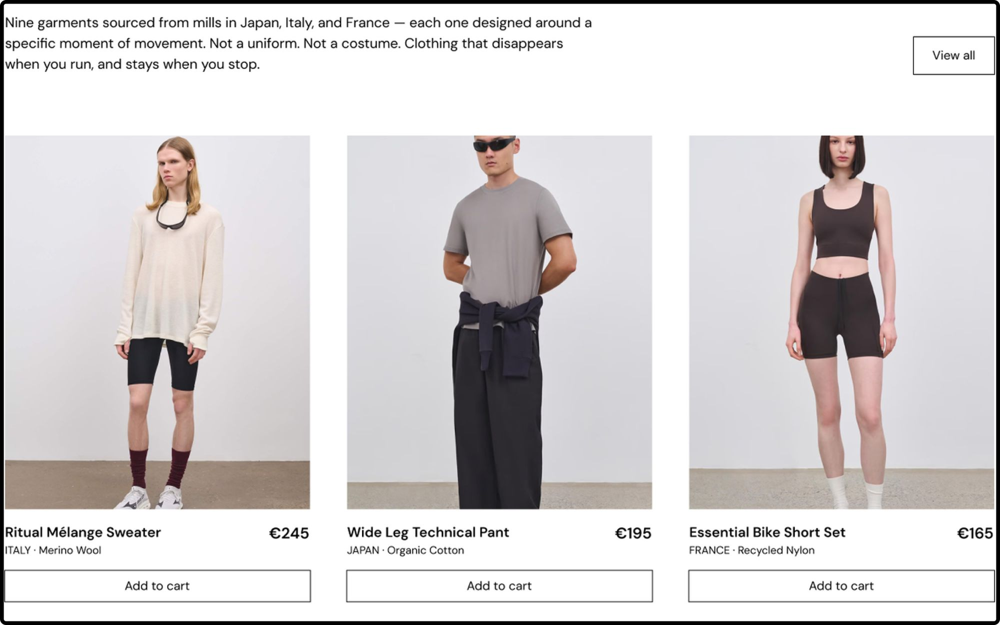
Proceso
Cronología del proyecto
Lo dividí en tres fases: definir la marca, crear su universo visual y diseñar la landing.
Fase 01
Definición
Territorio de marca
Ejes de marca
Pilares comunicativos
Wireframe lo-fi
Fase 02
Moodboard
Benchmark de marcas
Referencias de alma
Moodboard
Foundations
Fase 03
Landing
Wireframe mid-fi
Copy
Desktop y móvil
Landing publicada
Punto de partida
El reto
Marca o venta
La marca todavía no existía, así que la home tenía que presentarla y además ser su principal canal de venta. Si se centraba en vender, perdía la esencia. Si solo contaba la historia, no vendía.
Una home que cuenta y vende
Una home con un hilo narrativo, apoyada en tres pilares: reconocer, demostrar e invitar. Cada bloque de venta va acompañado de uno de marca, para que la compra llegue por identificación y confianza, sin meter prisa.
Marca
Destilar la marca
Partí de los valores del brief (intención, refinamiento, cultura y contención) y los fui reduciendo hasta quedarme con dos atributos que ninguna marca de la competencia combina.
Tejidos de autor
Lo que importa es de dónde viene cada tejido.
Atributo 1
Identidad ritual
Correr como un momento personal, y la ropa como parte de ese ritual.
Atributo 2
La prueba de fuego
Sin la identidad ritual sería On Running. Sin los tejidos de autor, Lululemon.
Por qué funcionan juntos
Benchmark
Qué tomar de cada referencia
Analicé diez marcas: unas por cómo hablan del material y otras por cómo convierten una actividad en filosofía. De cada una me quedé con una idea, o con algo que tenía claro que no quería.
Aesop
Siempre dice de dónde viene cada ingrediente. Yo hago lo mismo con los tejidos.
✓ Lo tomo
Aman Resorts
Su web va despacio y te hace bajar el ritmo antes de reservar. Quería un hero igual de tranquilo.
✓ Lo tomo
Rapha
Cuida mucho lo editorial, pero se siente fría y como de club cerrado. Le falta calidez.
✕ Lo evito
También analicé Snow Peak, Outlier, Issey Miyake, Loro Piana, Headspace, Muji y Tea Drunk.
Narrativa
Pilares comunicativos
Son tres verbos que resumen lo que quiero que la página provoque en quien la visita. Reconocer habla de la persona, demostrar habla del producto e invitar es la llamada a la acción, que siempre va de la mano de uno de los otros dos.
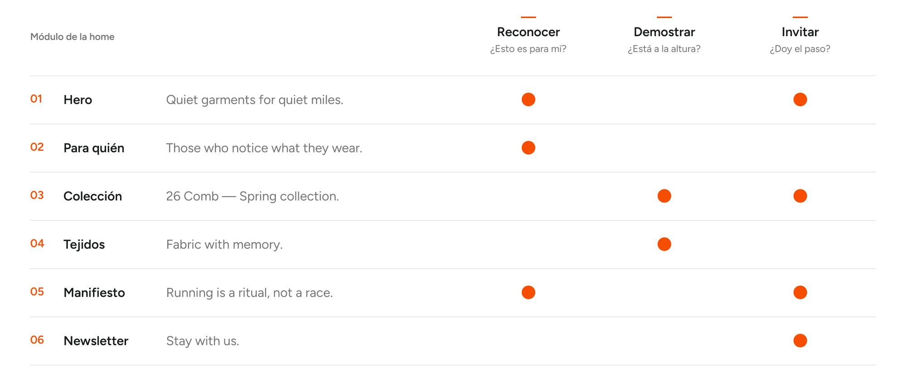
← Desliza para verlo entero →
La landing
Quiet garments for quiet miles
La home tiene seis bloques que van alternando marca y venta. Cada uno activa uno o dos pilares, y ninguno pide comprar sin antes haber dado un motivo.
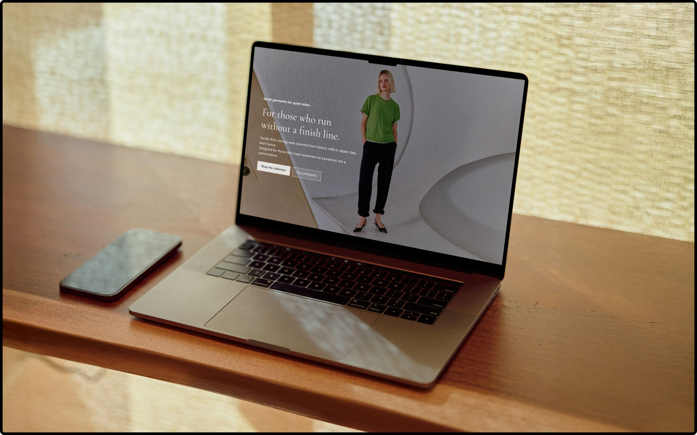
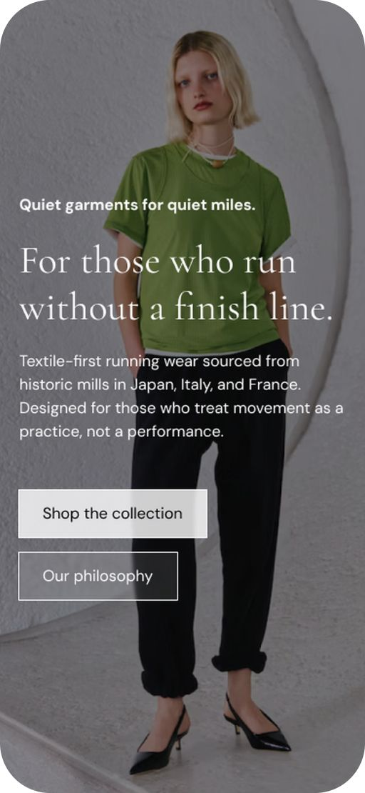
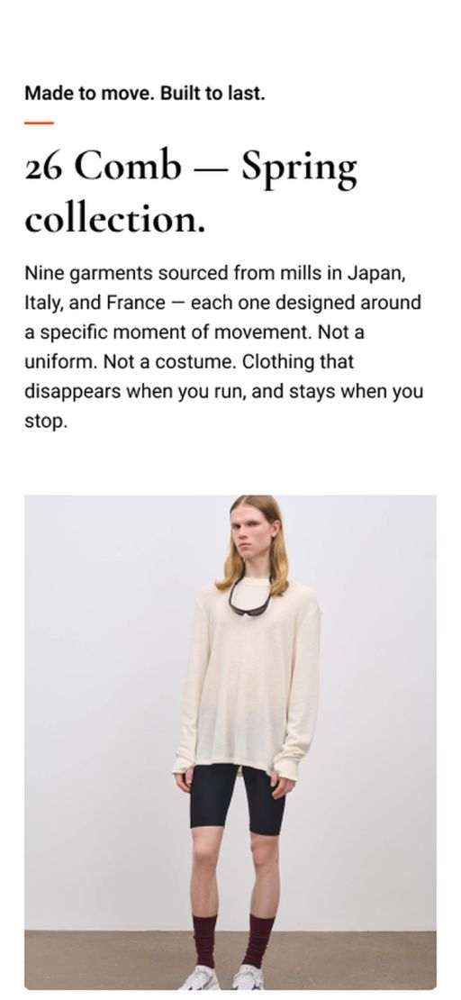
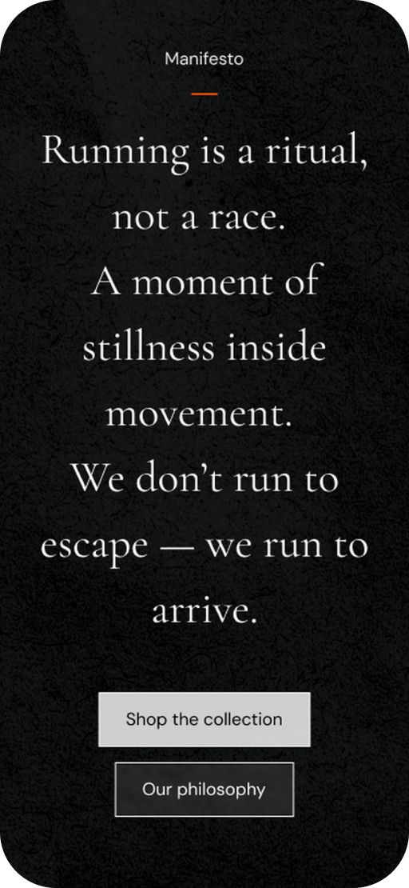
01 / 06 · Reconocer · Invitar
Hero
Antes de enseñar ningún producto, el hero dice para quién es la marca: For those who run without a finish line. Tiene dos botones, uno para comprar y otro para conocer la filosofía.
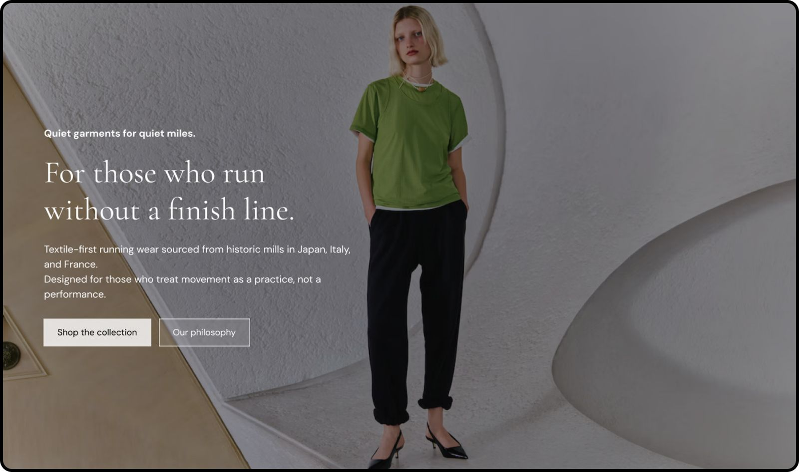
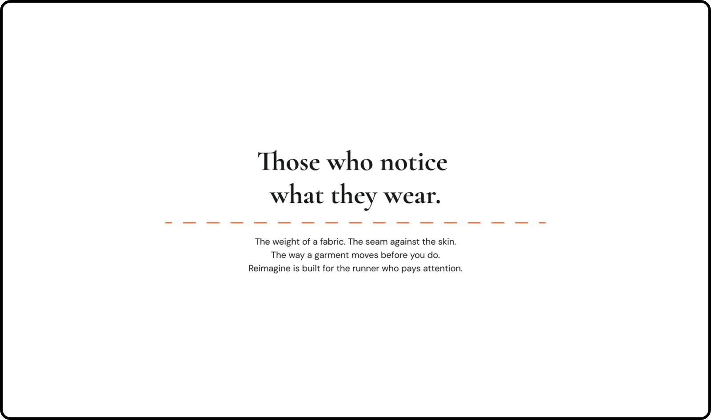
02 / 06 · Reconocer
Para quién
El peso de un tejido, una costura contra la piel. Es el bloque en el que quiero que la persona piense que esto va con ella.
03 / 06 · Demostrar · Invitar
Colección 26 Comb
Nueve prendas, y cada ficha indica de dónde viene el tejido (IT·01, merino). Lo saqué de Aesop: el dato ya es el argumento.
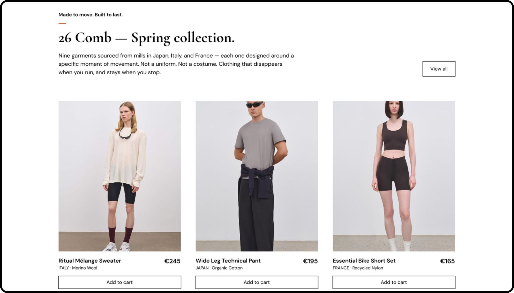
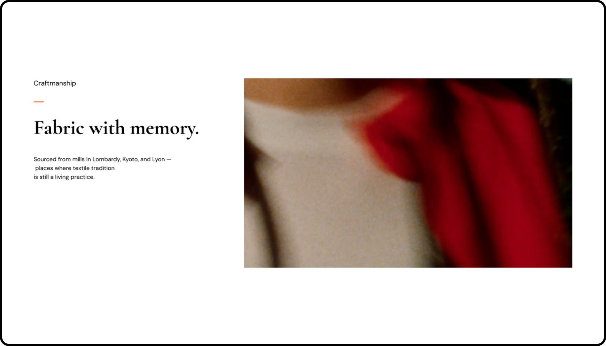
04 / 06 · Demostrar
Fabric with memory
Primero el tejido en primer plano y después la prenda. Nombrar los lugares (Lombardía, Kioto, Lyon) demuestra que lo del origen va en serio.
05 / 06 · Reconocer · Invitar
Manifiesto
El manifiesto cierra la parte de marca sobre fondo negro. Los botones vuelven a aparecer, pero aquí se apoyan en todo lo que ya has leído.
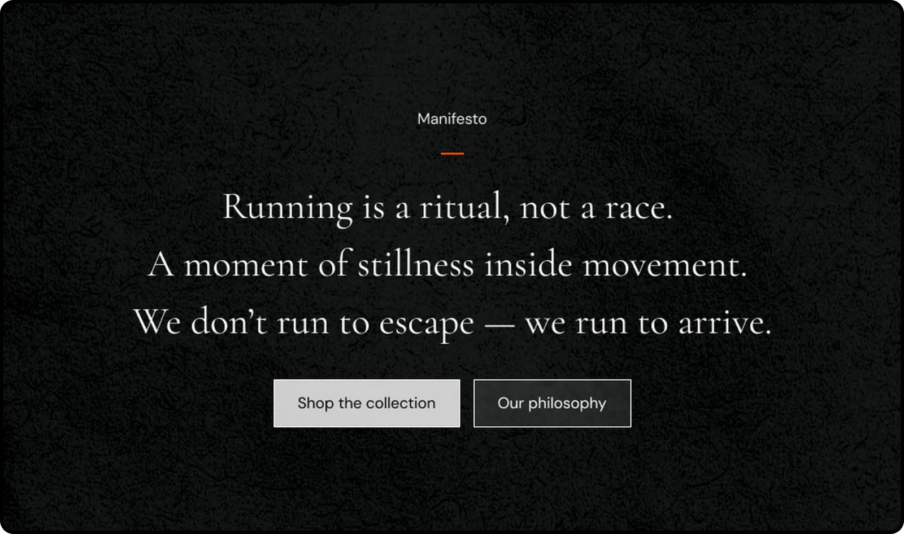
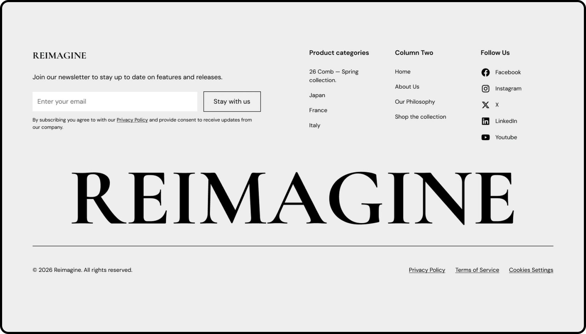
06 / 06 · Invitar
Newsletter y footer
Una invitación tranquila a quedarse, sin descuentos ni urgencias, en el mismo tono que el resto de la página.
Proceso
La IA como herramienta
La usé en tres momentos concretos, para contrastar ideas o ir más rápido. Las decisiones las tomé yo.
Claude
Contrastar
Le planteé mis ejes de marca para ver si se sostenían. Coincidimos en el par Identitario y Minimalista, y me ayudó a pulir los atributos.
Figma AI
Generar imagen
Las fotos de producto y de ambiente están hechas con IA. El ejercicio se centraba en la narrativa, así que no tenía sentido dedicar tiempo a la fotografía.
Figma Sites
Publicar
Pasé el mid-fi a una web navegable para revisar el ritmo, el scroll y la proporción entre imagen y texto tal y como lo vería alguien de verdad.
Interfaz
Quiet luxury
Todo el universo visual sale de una idea: el lujo silencioso. Lo que es bueno no necesita gritarlo, se nota en el material, en los espacios y en el ritmo.
Concepto
Menos y mejor elegido
Mucho blanco, fotografía cálida y transiciones suaves. Como en Aman o Issey Miyake, el producto tiene espacio para respirar y nada compite por llamar la atención.
Foundations
El sistema
Cormorant Garamond para los titulares y DM Sans para el texto. Negro, grises y blanco, con un solo acento naranja (#F54E00) que marca el ritmo. Grids rectos y sin redondeos.
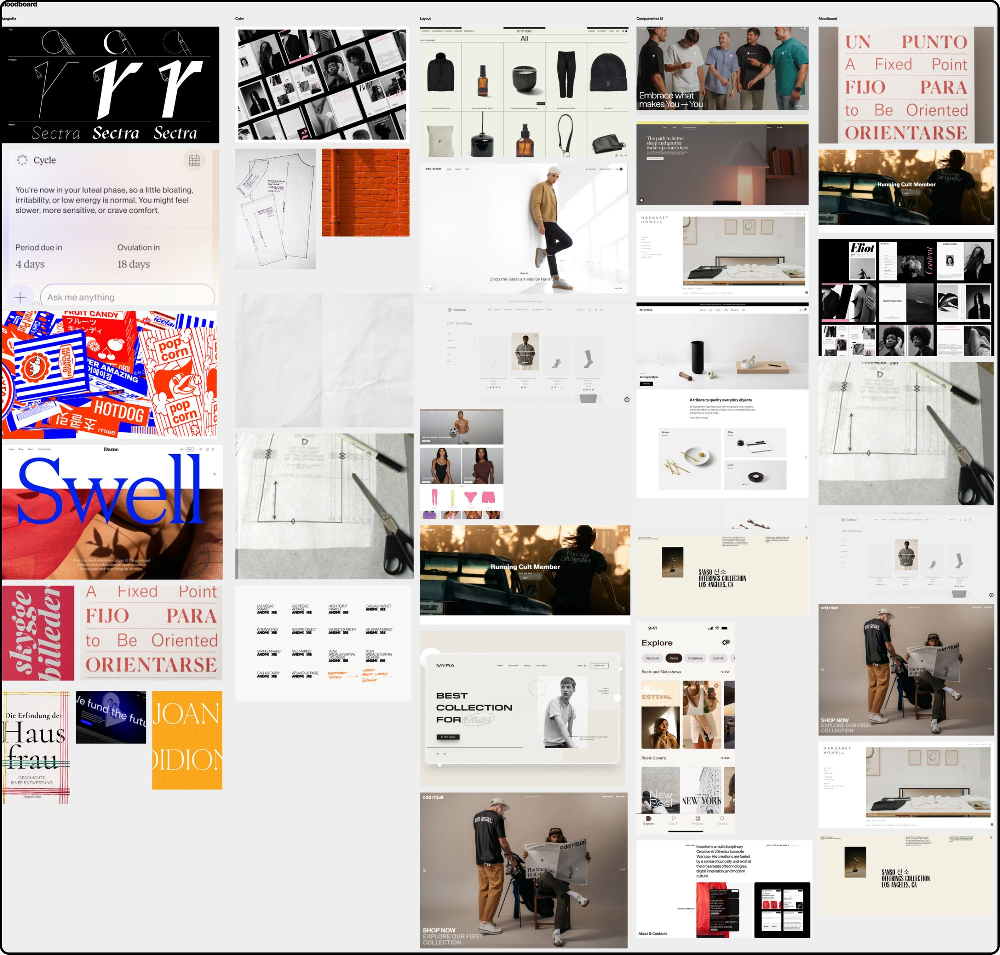
← Desliza para verlo entero →
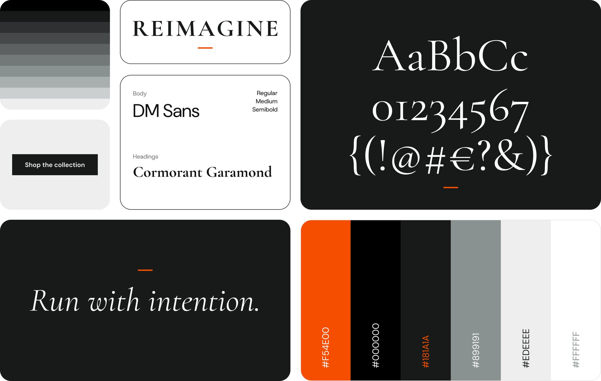
Iteración
De la versión de clase a la v2
En clase hicimos un primer wireframe en 45 minutos. En las semanas siguientes lo rehice entero, con más calma y más criterio.
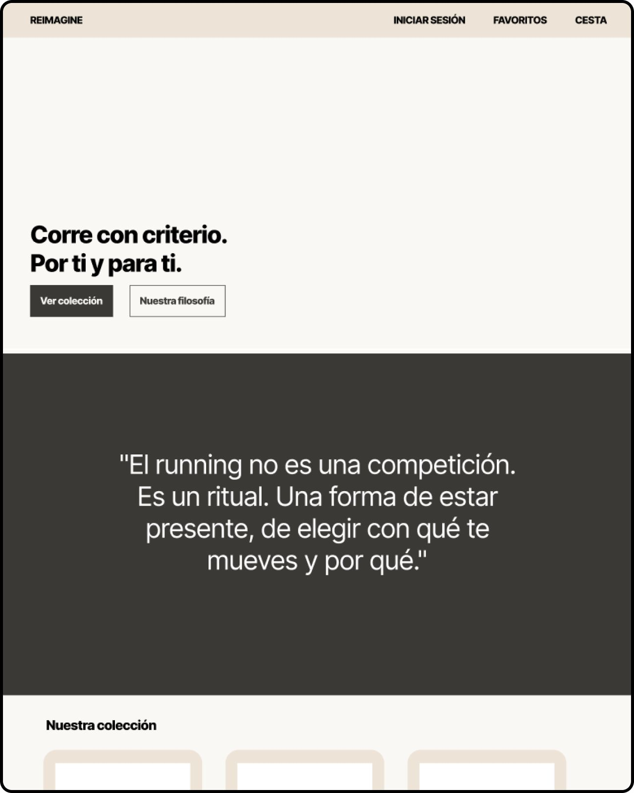
Antes · Wireframe de clase
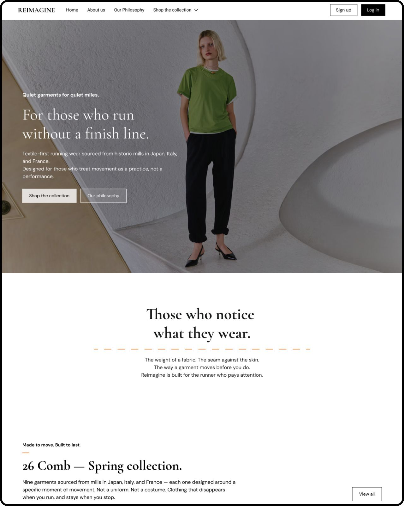
Después · v2
Pilares
Verbos que hacen algo
Identificar, validar e impulsar pasaron a ser reconocer, demostrar e invitar. Así describen lo que la página le hace a quien la visita.
✓ v2
Módulos
Menos bloques
Pasé de ocho bloques a seis: quité los testimonios y la sección de filosofía, y junté la newsletter con el footer. La página respira más.
✓ v2
Idioma
Copy en inglés
Pasé todo el copy al inglés y lo fui puliendo hasta que cada frase sonara tranquila y contenida, como la marca.
✓ v2
Aprendizajes
Lo que me llevo
01
Cada bloque tiene que responder a un pilar
02
Lo siguiente: testear la home con corredores reales